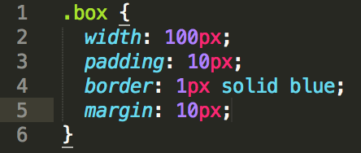
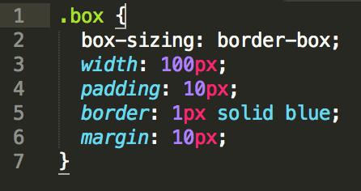

Difference Between Margin, Border and Padding
Posted on 14 Jun 2014 by Kyle Daugherty
CSS Box Model
Any HTML element can be thought of as a box and in CSS this is referred to as the box model. There are 4 different parts that make up the box model which consists of margin, borders, padding and the actual content inside the HTML element. Here is an illustration of the box model:

Let's start off by discussing the content as it is the easiest to understand. The content is the information inside of the HTML element. So, whether it be text or an image that is the content area. When the content area gets rendered by the browser, it is contained inside an invisible box.
Next, is the padding. The padding places a "buffer zone" between the content area and the border. If the content area has a background set, then the padding will inherit it.
Next up is the border. The border outlines the element which may be the content area (if there is no padding) or it may surround the edge of the padded area. The border can be set to have a thickness, styling (ex: solid, dotted, dashed) and color. If there is no border color specified, then the border will use the color value of the element.
The final piece to the box model is the margin. It is very similar to padding in that it provides spacing, but margin puts space between the border and any surrounding elements. Margin also differs from padding and it does not inherit any background and is completely transparent.
The default way to calculate the size of the box is to add the padding, border and margin in addition to the content area. For instance, the width is calculated by adding the content width, padding (left and right), border (left and right), and margin (left and right). Similarily, height is determined by adding the content width, padding (top and bottom), border (top and bottom), and margin (top and bottom). Margin is unique that it does not affect the size of the element per se. Although, it must be included in the calculation because it provides a gutter between other elements.
We are able to change the box-sizing property in CSS and set it to "border-box" instead of "content-box." In doing so, the margin is excluded when calculating the size of the element.
